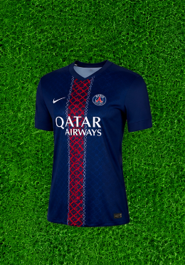

Paris Saint-Germain
La camiseta del PSG fusiona la moda parisina con el deporte en un diseño femenino elegante en azul marino y su icónica franja central en rojo y blanco. Fabricada en microfibra de poliéster de alta calidad con tecnología antitranspirante, garantiza una óptima ventilación, suavidad al contacto con la piel y frescura constante. Perfecta para alentar al club parisino o complementar un estilo deportivo urbano.
$225.000